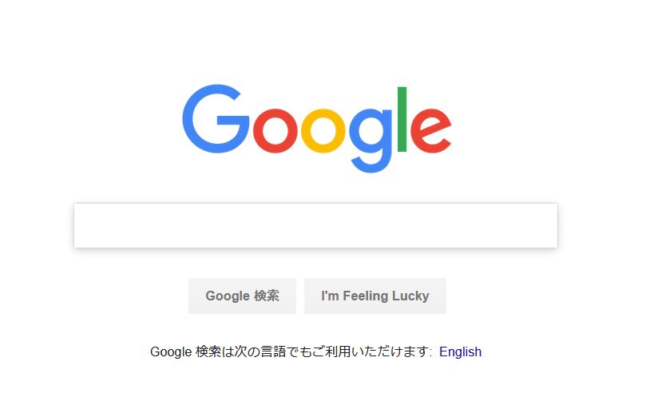
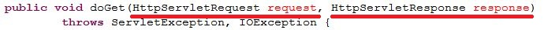
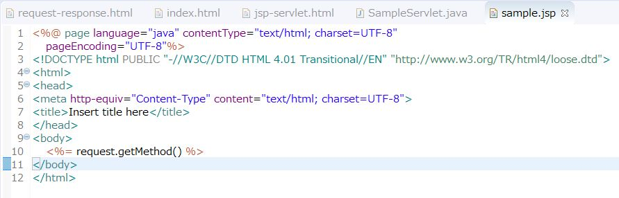

Webの世界ではリクエストとレスポンスという言葉が頻繁に出てきます。リクエストはWebクライアントからWebサーバーへの要求、レスポンスはWebサーバーからWebクライアントへの応答をそれぞれ意味しています。例えば以下にGoogleへのリンクがあります。
このリンクをクリックすることでWebブラウザはgoogle.co.jpという名前のWebサーバーにWebページを見せるように要求しているということになります。これがリクエストです。これに対して、要求を受け付けたgoogle.co.jpというWebサーバーは以下のようなWebページを表示します。
これがレスポンスです。
上記の説明ではgoogle.co.jpというWebサーバーがWebページを表示しているかのような書き方をしてしまいましたが、厳密に言うとWebサーバーが返すレスポンスは単なるテキストデータに過ぎません。サーバーが返してきたテキストデータを解釈して表示するのはWebブラウザの仕事です。
前回記事で説明したようにWebサーバーから転送されてきたリクエストを受け付けて、リクエストに応じた処理を行い、Webサーバーにレスポンスを返すのがサーブレットの仕事です。サーブレット自身はJavaオブジェクトですので、リクエストやレスポンスもJavaオブジェクトとして扱われなければなりません。リクエストはHttpServletRequestオブジェクト、レスポンスはHttpServletResponseオブジェクトとしてそれぞれ定義されています。
前回作成したSampleServletの実装を確認してください。doGetメソッドの引数にHttpServletRequestオブジェクトとHttpServletResponseオブジェクトが渡されていることが確認できると思います。これらのオブジェクトはWebサーバーからのリクエストを受け取ったサーブレットコンテナ（Tomcat）が自動的に生成してリクエストプロセッサーに引き渡しています。リクエストプロセッサーは実際に処理を担当しているサーブレットにこれらのオブジェクトを引き渡しているという仕組みになっています。
サーブレットの場合はdoGetメソッドの引数にリクエストとレスポンスが渡されますのでこれらを操作することが可能ですが、JSPファイルを見るとHttpServletRequestもHttpServletResponseも登場してきません。ではJSPではこれらのオブジェクトを扱うことができないのでしょうか。いいえ、そんなことはありません。以下のコードを見てください。
いきなり何の前触れもなくrequestという名前のオブジェクトが登場してきています。実はこれはHttpServletRequestのインスタンスなのです。本来であればHttpServletRequest型の変数requestとして宣言されていなければならないはずですが、全てのJSPは等しくリクエストとレスポンスを操作することができますので、宣言が省略されているのです。これを暗黙オブジェクトといいます。HttpServletResponseについてもresponseという名前の暗黙オブジェクトが用意されています。
リクエストとレスポンスのほかにもHttpSession型の暗黙オブジェクトであるsession、ServletContext型の暗黙オブジェクトであるapplicationなどがありますが、これらについての説明は割愛します。（HttpSessionについては「セッションの利用」で解説します。）